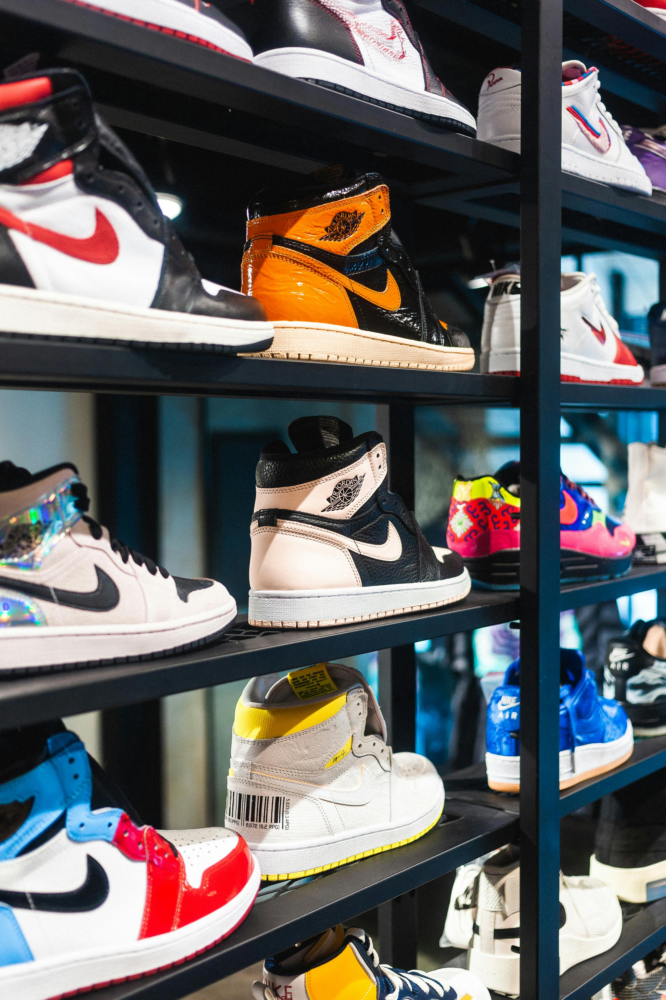
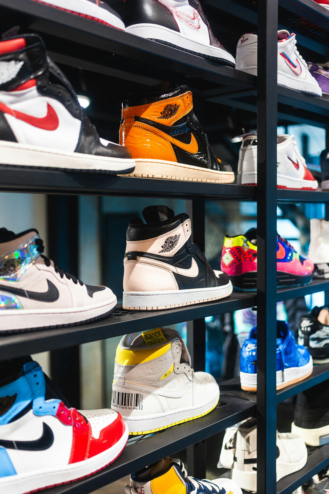

Nike
Tijdens mijn tijd bij Nike heb ik een geweldige ervaring opgedaan die mijn werkethiek en teamworkvaardigheden heeft versterkt. Ik werkte voornamelijk in het weekend, wat een unieke dynamiek met zich meebracht. De sfeer was energiek en de collega’s waren allemaal gepassioneerd over het merk, wat het werken daar extra leuk maakte. Naast mijn reguliere weekenduren deed ik ook af en toe overuren, wat me de kans gaf om dieper in het werk te duiken en extra verantwoordelijkheden op me te nemen. Het was uitdagend, maar ik vond het fijn om een bijdrage te leveren aan het team en de klanttevredenheid te verbeteren. De drukte van het weekend hielp me om mijn tijdmanagement en multitaskingvaardigheden te ontwikkelen. Elk moment bij Nike leerde me niet alleen over de operationele kant van het bedrijf, maar ook over de waarde van samenwerking en klantgerichtheid. Ik ben dankbaar voor de kans om deel uit te maken van zo’n iconisch merk en kijk ernaar uit om deze ervaringen mee te nemen in mijn toekomstige uitdagingen.

 

Mobis
Bij Mobis in Beringen heb ik waardevolle ervaring opgedaan in de automotive sector, waar ik verantwoordelijk was voor de productie van onderdelen voor Kia en Hyundai. Het werken in een dynamische omgeving als deze was een leerzame uitdaging. Doordeweeks werkte ik in een tweeploegensysteem, wat betekende dat ik zowel ochtend- als avondshifts draaide. Deze flexibele werktijden hielpen me mijn aanpassingsvermogen en tijdmanagement te verbeteren. Naast mijn reguliere uren hielp ik af en toe ook op zaterdagen. Deze extra inzet gaf me de mogelijkheid om mijn vaardigheden verder te ontwikkelen en de productieprocessen beter te begrijpen. De samenwerking met mijn collega’s was een van de hoogtepunten van mijn tijd bij Mobis. We waren een hecht team dat elkaar steunde en samen streefde naar hoge kwaliteitsnormen. Mijn ervaring bij Mobis heeft me niet alleen technische kennis bijgebracht, maar ook inzicht in de werking van een internationaal bedrijf. Het heeft me gemotiveerd om te blijven groeien en leren binnen de sector. Ik ben dankbaar voor de kans die ik daar heb gekregen en de waardevolle lessen die ik heb geleerd.
Studies
Tijdens mijn middelbare schoolperiode ontdekte ik mijn interesse voor IT. De vakken in deze richting fascineerden me en gaven me een glimp van de mogelijkheden die de technologie biedt. Na mijn middelbare school besloot ik om twee maanden aan de PXL hogeschool te studeren, waar ik meer leerde over de technische aspecten en de praktische toepassingen van IT. Helaas moest ik, om persoonlijke redenen, stoppen met mijn studie. Na mijn studieperiode heb ik drie jaar gewerkt om mijn moeder te ondersteunen. Deze tijd was waardevol; ik heb niet alleen bijgedragen aan ons gezin, maar ook verschillende werkervaringen opgedaan. Het werken gaf me een nieuw perspectief op verantwoordelijkheid en zelfredzaamheid. Ondanks dat ik niet verder ging met mijn studie, bleef mijn interesse in IT aanwezig. Deze ervaringen hebben me doen inzien hoe belangrijk het is om je dromen na te jagen, zelfs als het leven andere paden bewandelt. Nu kijk ik ernaar uit om mijn passie voor technologie opnieuw op te pakken en mijn kennis verder uit te breiden. De tijd die ik heb doorgebracht met werken voor mijn moeder heeft me sterker gemaakt en mij voorbereid op toekomstige uitdagingen.


Studie Skills
Hier zie je een skill tree van mijn skills die ik heb gekregen van mijn studies ze zijn zeker accuraat!!